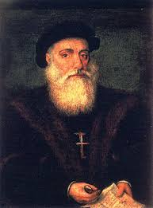
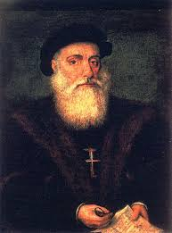

O Quinhentismo é um período literário e cultural que se refere às produções do século XVI, especialmente no contexto do Brasil e de Portugal. O termo "Quinhentismo" deriva dos anos 1500, que marcam o início da colonização portuguesa nas Américas e o contato entre os europeus e os povos indígenas. Esse período é fundamental para entender as primeiras representações escritas sobre o Brasil e o impacto do encontro entre duas culturas radicalmente diferentes: a europeia e a indígena. Contexto Histórico O Quinhentismo coincide com a era das Grandes Navegações, quando Portugal e Espanha exploravam novas rotas marítimas e territórios desconhecidos. Em 1500, com a chegada de Pedro Álvares Cabral ao Brasil, os portugueses iniciaram o processo de colonização. A literatura desse período reflete as impressões dos europeus sobre o Novo Mundo, suas riquezas naturais e os povos que aqui habitavam.